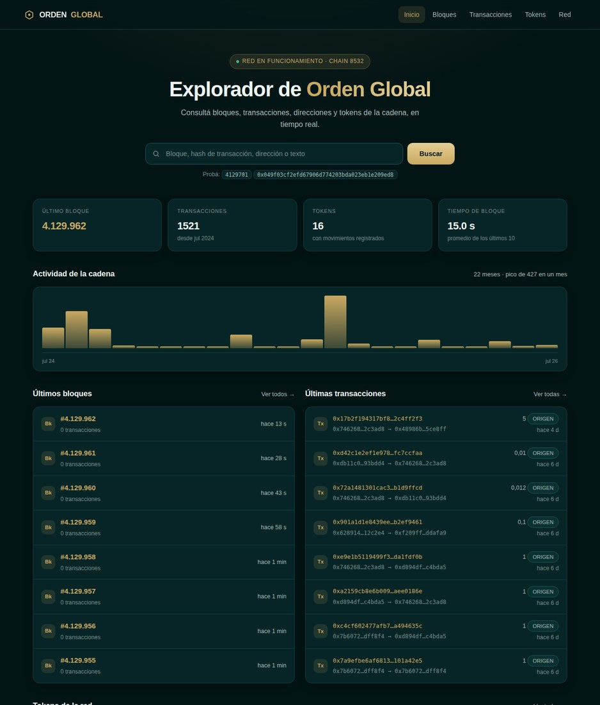
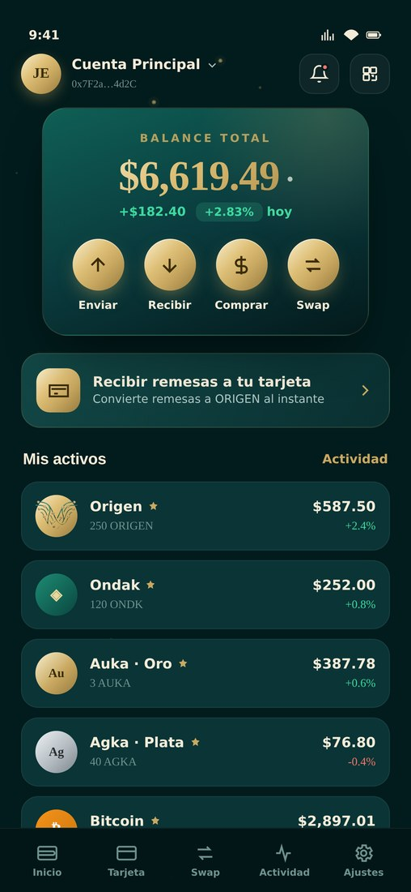
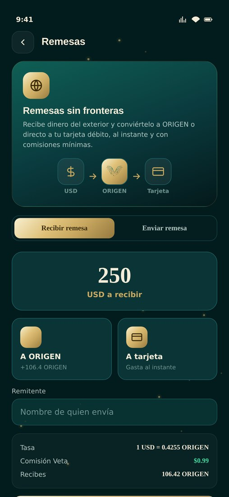
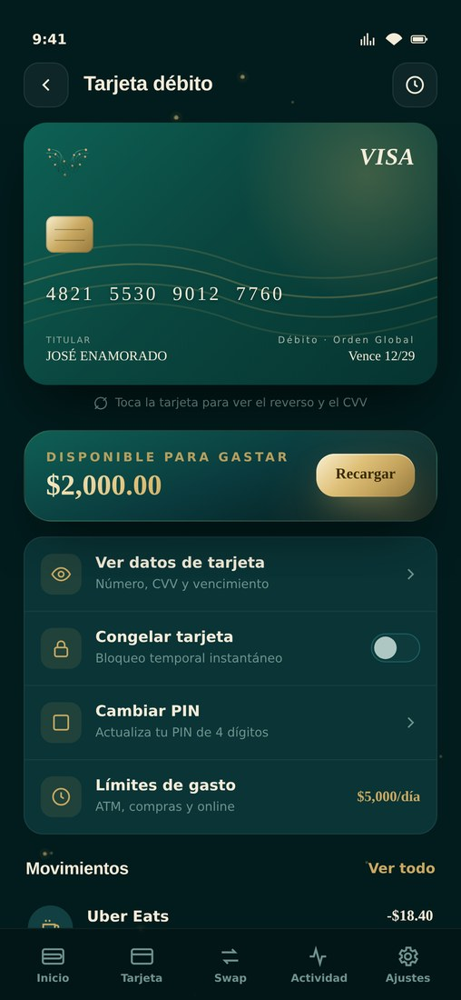
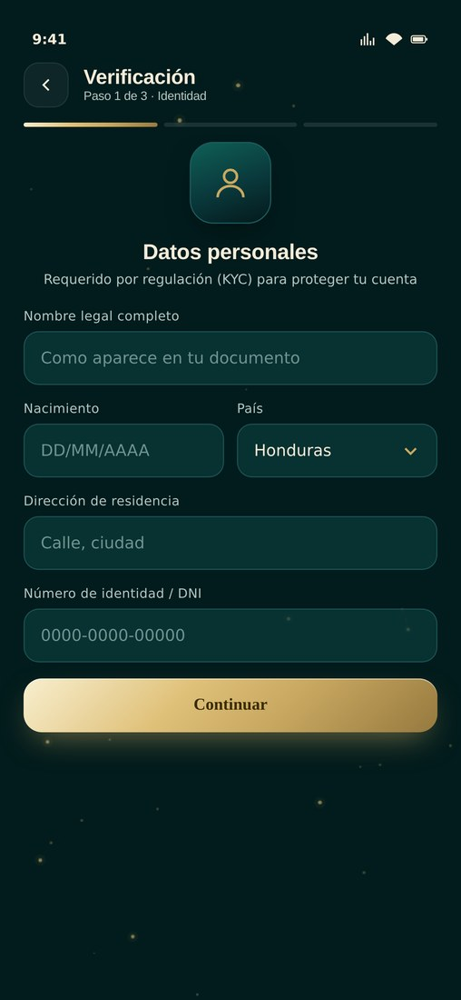
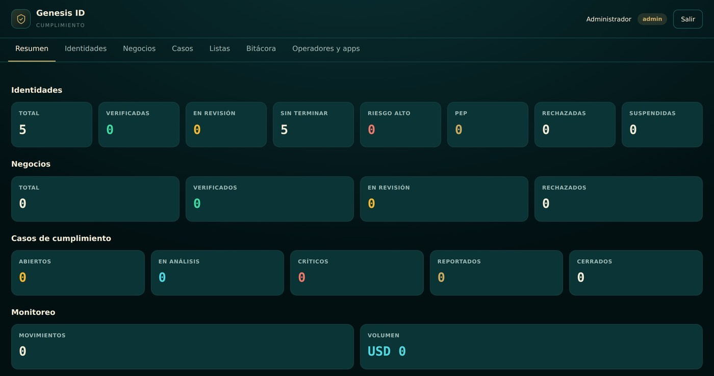

Una cadena de bloques propia, con identidad verificada incorporada desde el primer bloque. No un token sobre la cadena de otro: infraestructura, en producción, con usuarios reales.
En 2025 llegaron a Honduras US$ 12.212 millones en remesas — el 30,4 % del producto interno bruto, la proporción más alta de América Latina. Es la primera fuente de divisas del país: más que las exportaciones y más que toda la inversión extranjera junta.
Ese dinero llega por tuberías caras, lentas y ajenas. El costo de moverlo equivale a poco más del 2 % del PIB hondureño, un peaje que pagan las familias que menos pueden pagarlo.
Un hondureño en Estados Unidos manda dinero a su madre. Ese envío pasa por un remitente, un corresponsal, dos bancos y una casa de cambio. Cada uno cobra. Cada uno tarda.
Al final del recorrido, entre comisión explícita y tipo de cambio, se ha quedado por el camino una parte que a escala de país supera el 2 % del PIB.
Las criptomonedas prometieron resolver esto hace diez años y no lo hicieron. La razón no es técnica.
de hondureños viven en Estados Unidos, de donde sale el 98,46 % de las remesas del país.
Nicaragua 30 % del PIB · El Salvador 27,3 % · Guatemala 21,4 %. El mismo problema, cuatro veces.
El primer cuatrimestre de 2026 cerró 14,3 % por encima del mismo período del año anterior.
Porque para mover dinero de verdad hay que saber quién lo mueve. Un banco no puede recibir fondos de una dirección anónima. Un comercio no puede cobrar sin saber a quién. Un regulador no autoriza lo que no puede rastrear.
La industria construyó redes rapidísimas y sin identidad, y luego intentó pegarle el cumplimiento por fuera, con proveedores externos, a un costo por consulta y sin control sobre los datos. Ese remiendo es el cuello de botella, y es exactamente donde entra Orden Global.
Orden Global no es una aplicación sobre la cadena de otro. Es una cadena entera —la 8532, con su moneda ORIGEN— y encima, integrada desde el diseño y no pegada después, una capa de identidad verificada.
Se verifica una vez. Esa identidad le sirve en la billetera, en el comercio y en el explorador, sin repetir el trámite ni volver a mandar su documento.
Cobra sabiendo a quién le cobra, y puede comprobar antes de firmar si una dirección está sancionada.
Cada decisión de aprobación queda firmada por una persona en una bitácora que, si se altera, lo delata.
Emitir un token sobre una cadena ajena es rápido y barato el primer día. El precio se paga después, y se paga siempre.
| Token sobre cadena ajena | Layer 1 propia · lo que tenemos | |
|---|---|---|
| Comisiones | Las fija otro. Suben cuando su red se congestiona, por motivos que nada tienen que ver con tu negocio | Las fijás vos. Hoy están en cero, medido en la cadena |
| Reglas | Cambian sin avisar y sin voto tuyo | Las define la organización |
| Identidad | Ajena a la red. Se compra por consulta a un proveedor externo | Nativa. El dato es propio y la regla también |
| Ingresos de red | Se los queda la cadena anfitriona | Se quedan en el ecosistema |
| Continuidad | Si la cadena anfitriona falla o cambia de rumbo, arrastra tu producto | El destino es propio |
| Activo | Una aplicación | Infraestructura. Se licencia, se conecta y se valora distinto |

Los 15,3 segundos entre bloques se midieron sobre 51.200 bloques reales —más de nueve días de historia— y salieron constantes en todos los tramos.
Cualquier billetera, contrato o herramienta del mundo Ethereum funciona sobre ella sin modificaciones. No hay que reeducar a nadie.
Explorador público que cumple el estándar internacional. Lo que pasa en la cadena lo puede comprobar cualquiera, sin pedir permiso.
Donde una persona guarda su dinero, lo envía, lo recibe y acredita quién es. Hace un año existía solo como página web. Hoy es una aplicación móvil completa, construida desde cero y en su versión 1.32.




Recibir dinero del exterior y gastarlo con una tarjeta, sin pasar por una casa de cambio. Es el caso de uso que mueve los doce mil millones.
La verificación ocurre dentro de la aplicación: documento, rostro y prueba de vida. No hay que mandar papeles a nadie.
Perder el teléfono no es perder el dinero. Es la diferencia entre una billetera para entusiastas y una para todos.
Una cadena la copia cualquiera. Un sistema de cumplimiento que funcione, no.

La aritmética del documento según el estándar internacional —cambiar una fecha para aparentar otra edad rompe las cuentas y se detecta—. Que el rostro sea el del documento. Que haya alguien vivo delante de la cámara, con una secuencia de gestos que sortea el servidor. Que el nombre no aparezca en las listas de sanciones, tolerando alias, tildes, errores de escritura y transliteraciones. Y ocho reglas sobre cada movimiento.
Cada producto nuevo del ecosistema arranca con toda la base de usuarios ya verificada. No hay que volver a pedirle el documento a nadie, y el usuario no vuelve a pasar por el trámite que más gente abandona.
Un solo trámite en toda su vida dentro del ecosistema. El punto donde la mayoría de las aplicaciones financieras pierde a sus usuarios.
Cada producto nuevo nace con la base verificada. El costo de adquisición baja con cada pieza que se suma, en vez de repetirse.
La misma identidad se puede licenciar a otras empresas de la región. El sistema ya está construido para atender a varias aplicaciones a la vez.
| Fuente | De qué se cobra | Estado |
|---|---|---|
| Remesas y cambio | Diferencial sobre el envío internacional y su conversión a moneda local. El volumen del mercado son los doce mil millones de la página 2 | Producto construido |
| Tarjeta | Emisión, recarga desde la billetera y comisión de intercambio en cada compra | Producto construido |
| Comercios | Cobro en el punto de venta con MyTokenPay, con la identidad del comprador verificada | Clave emitida · sin activar |
| Identidad como servicio | Licenciar Genesis ID a otras empresas de la región que necesitan cumplimiento y no quieren construirlo | Motor listo · sin comercializar |
Hoy usar la cadena no cuesta nada: la comisión está en cero, y eso está medido, no estimado. Es una decisión, no una limitación — y se puede cambiar el día que convenga. Mientras tanto es un argumento comercial que ninguna red ajena puede igualar, porque en una red ajena el precio lo pone otro.
Un inversionista serio pregunta por lo que falta antes que por lo que sobra. Esto es todo, medido el 6 de agosto de 2026.
| Pieza | Estado real | |
|---|---|---|
| Cadena 8532 | Produciendo bloques cada 15,3 s desde hace 22 meses, sin interrupción | En producción |
| Descentralización | Un validador activo. Cinco nodos más al 61 % de sincronización, listos en 17-23 h | En curso |
| Explorador | Público, reconstruido, cumple el estándar internacional | En producción |
| Veta Wallet | Versión 1.32 para Android, probada en teléfono real | Lista para tienda |
| Genesis ID | Operando, con listas de sanciones al día y bitácora íntegra | En producción |
| MyTokenPay | Integración disponible; su clave está emitida y todavía sin usar | Por decidir |
| Cuándo | Qué |
|---|---|
| Semana 1 | De 1 a 5 validadores. Se acaba el punto único de falla — los nodos ya están, falta la decisión de tesorería |
| Mes 1 | Registro de la red en el directorio internacional de cadenas: cualquier billetera del mundo la añade con un clic |
| Mes 1-3 | Publicación en Google Play y App Store. Primeros usuarios reales de remesas |
| Mes 3-6 | Activación de MyTokenPay y primeros comercios cobrando |
| Mes 6-12 | Genesis ID como servicio para terceros; expansión a los países vecinos, que tienen el mismo problema |
La infraestructura ya está construida y pagada. Lo que el capital compra no es desarrollo desde cero: es llegar al mercado con un producto que ya funciona.
| Destino | Para qué | Del total |
|---|---|---|
| Licencias y cumplimiento | Autorizaciones para operar como transmisor de dinero en cada país, auditoría externa del sistema de cumplimiento y asesoría regulatoria | — |
| Adquisición de usuarios | Captación en los corredores de remesas, empezando por Estados Unidos–Honduras | — |
| Liquidez operativa | Fondo para liquidar remesas en el momento, sin hacer esperar al receptor | — |
| Equipo | Cumplimiento, soporte al usuario y desarrollo del comercio | — |
| Infraestructura | Más validadores, respaldos automáticos y auditoría de seguridad independiente | — |
Cadena, billetera, identidad y explorador, construidos y en producción.
El corredor de remesas más dependiente de América Latina, conocido desde dentro.
El activo que los competidores alquilan y aquí es de la casa.
Las remesas a Honduras subieron 25,3 % en 2025 y el primer cuatrimestre de 2026 cerró 14,3 % por encima del año anterior. No es un mercado que haya que crear: ya está ahí, creciendo, y mal atendido.
La cadena está corriendo, la billetera está construida y la identidad opera. Hace dos años esto habría sido una presentación con un plan. Hoy es una presentación con un explorador público que cualquiera puede abrir ahora mismo y comprobar.
Mientras el sector trataba la identidad como un trámite que retrasa, aquí se construyó como parte del producto. Ahora que ningún operador serio puede mover dinero sin ella, lo que parecía el camino lento resultó ser el único que llega.
La cadena está corriendo. La billetera está construida. La identidad opera. Lo que falta es llevarlo al mercado — y esa es la conversación que proponemos.
| El explorador de la cadena | ordenscan.com |
| La red, en directo | ordenglobal-rpc.com |